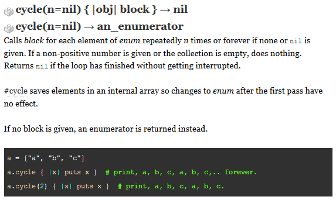

Technical Blog 4
The Cycle Method!
May 24th, 2015
This week we dive further into Ruby, solving more problems. The problems were not so bad since I had some experience with solving similar problems in the pass at Coderbyte. I got a chance to dig deeper into the method world of Ruby. I am given three choices of enumerable methods(map, group_by, and cycle) to choose from to write about and the method cycle seems to interest me. We will cover that here.

According to Ruby Docs on Cycle the cycle method calls a block for each element n times or forever if n is not specified.
We can calculate the sum of all numbers using this method. For example:
arr = [1,2,3,4,5,6,7,8,9,10]
sum = 0 #starting point
arr.cycle(1){|x| sum = sum + x}
sum #=> 55Of course, we can also increase the number of cycles to 2 and this would repeat and we will
sum=110 as the result. In addition, we are not limited to the addition operator. We can also use other mathematical operation such as multiplication. For instance:
arr = [1,2,3,4,5,6,7,8,9,10]
multiply = 1 #starting point
arr.cycle(1){|x| multiply = multiply * x}
multiply #=> 3628800
We can also use this method to also join a string.
words_arr = ["I", "like", "to", "code", "in", "Ruby"]
sentence = "" #starting point as empty string
words_arr.cycle(1){|word| sentence = sentence + " " + word}
sentence.strip #=> "I like to code in Ruby"The
strip method removes the white space before and after the sentence (in this case, before).
The possiblity to use the cycle method is endless and what I have described is only a teaser. I hope you enjoy this little session.
Thank you for reading!